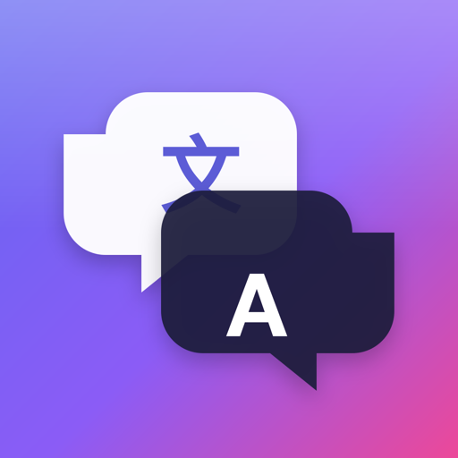
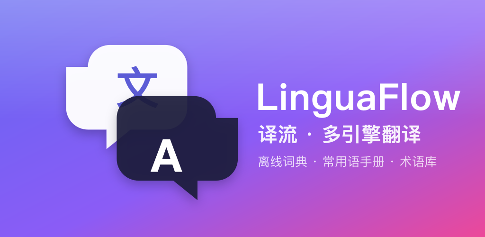
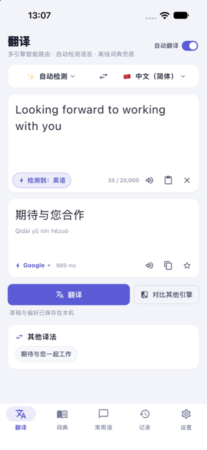
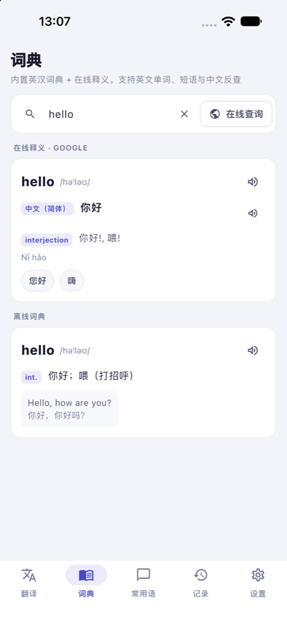
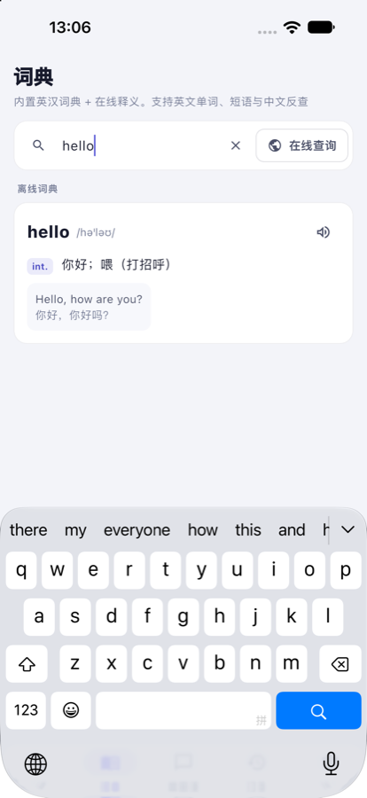
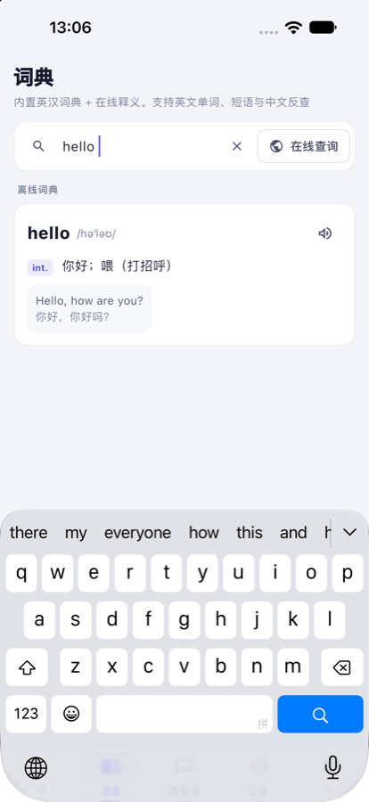

多引擎翻译 · 离线词典 · 14 语常用语手册 · 术语库 —— 数据全在你自己的设备上Multi-engine translation · offline dictionary · 14-language phrasebook · glossary — your data stays on your device
macOS 版未经 Apple 公证：首次打开请右键 App →「打开」。Android 需允许安装未知来源应用。iOS 版即将上架。
The macOS build is not notarized yet: right-click the app → Open the first time. Android needs "install from unknown sources". iOS is coming to the App Store.

Google、MyMemory、LibreTranslate、DeepL、OpenAI 兼容大模型（含本地 Ollama）、百度翻译——按你的顺序尝试，失败自动切换，也能并排对比一键采用。Google, MyMemory, LibreTranslate, DeepL, any OpenAI-compatible LLM (local Ollama too) and Baidu — tried in your order with automatic fallback, or compared side by side.
内置英汉词典（音标、词性、例句、中文反查）与 64 句 × 14 种语言的常用语手册，不联网也能查、能朗读。Built-in English–Chinese dictionary (phonetics, parts of speech, examples, reverse lookup) and a phrasebook of 64 phrases in 14 languages, with read-aloud.
没有账户、没有统计 SDK。历史、收藏、术语库、密钥都保存在本机，备份文件桌面版与手机版通用。No accounts, no analytics. History, favourites, glossary and API keys stay on the device; backups work across desktop and mobile.
旧译文原位保留、可取消、整理 PDF 硬换行、术语库固定专有名词译法并交给大模型遵循，四语界面与深色模式。Previous result stays while you edit, cancellable requests, PDF line-break tidying, a glossary that LLM engines must follow, four interface languages, dark mode.




原生窗口，全局快捷键 ⌃⌥T / ⌃⌥S 翻译选中文字，菜单栏「服务」集成，命令行工具。Native window, global shortcuts ⌃⌥T / ⌃⌥S to translate the selection, Services menu, command-line tool.
文字选择菜单中的「翻译」、分享到译流、系统朗读。"Translate" in the text-selection toolbar, share to LinguaFlow, system read-aloud.
分享扩展一键送入翻译，App Store 版即将上线。Share Extension hands text to the translator; App Store release coming.
在浏览器中运行的桌面版，`make` 即可构建。Desktop build that runs in the browser; build with `make`.